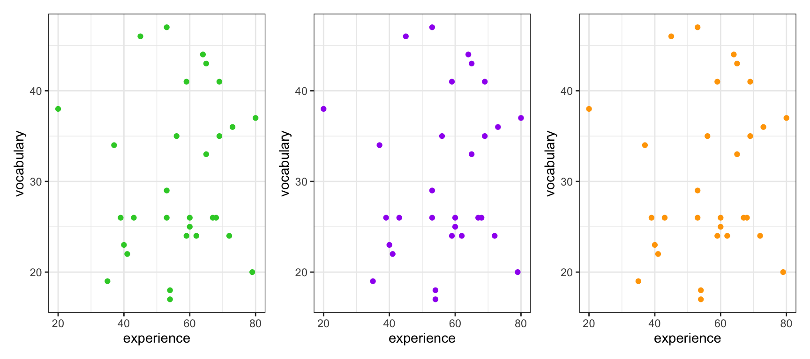
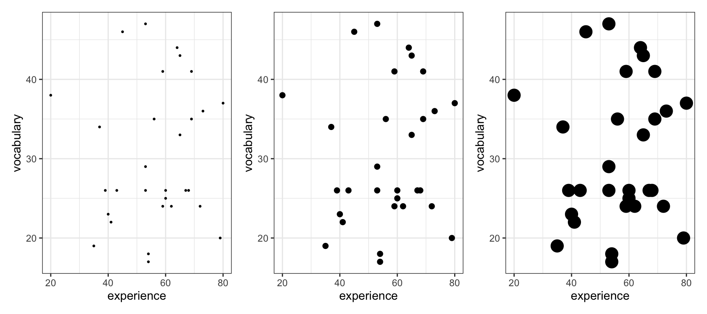
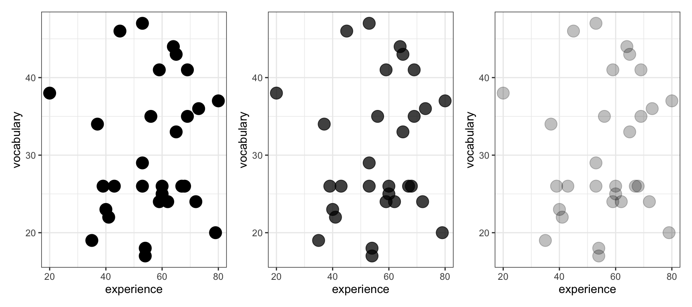
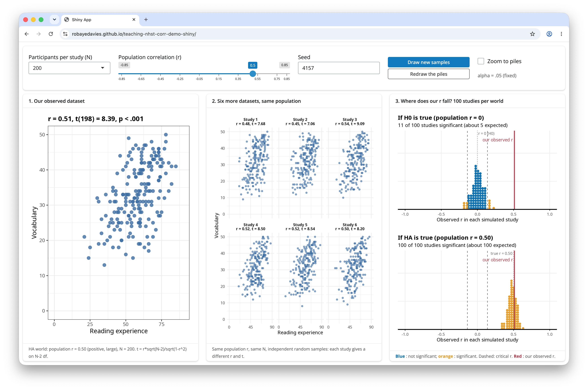

4. Week 4 - Hypothesis testing, significance testing
Written by Rob Davies and Margriet Groen
NoteOverview
This week we focus on two strands of learning:
- Hypothesis testing and significance testing and how we think about evidence in the context of correlation analysis
- Getting started on the group project: Getting into groups and planning the project
Building on last week’s work on how two numerical variables can vary together, this week we will apply hypothesis testing and significance testing to correlation analysis.
We will also start the group project in which you will investigate the question: Is mind wandering related to screen time?
The materials we have prepared to support your learning are arranged in four parts:
- Lectures
- Reading
- Pre-lab activities
- Lab activities
You can navigate to each in the side bar on the right
Lectures
Last week, we explored how two measures can vary together. You practised visualising the relationship using scatterplots and estimating Pearson’s \(r\). We also talked about how we respect participants’ choices, collect and protect appropriate data, and interpret and communicate research findings responsibly.
This week, we learn about hypothesis testing and significance testing and apply this to correlation analysis. We will also practise reporting correlation analysis following APA conventions.
We will make a start with the group project.
Important
Please watch the lecture material, complete the essential reading and then the pre-lab activities before attending your lab. As a reminder, the lectures and pre-labs introduce the concepts and give you some initial practice, and the lab gives you the opportunity to apply these skills in-person with our support.
TipQuestions?
Make a note of questions as you work through the material. These might be answered later in the recordings, or in your lab. Otherwise, please bring them to the live online Q&A session on Friday or post them on the Q&A forum on Moodle.
Section A: Hypothesis testing, significance testing
You can watch the lecture for the video using the video playback windows shown next. Our lecture on hypothesis testing and significance testing, shown next, is split into six short parts that you should watch in sequence.
1. Hypothesis testing and significance testing (~70 minutes in total)
You can download the lecture slides as a .html file you can open in any browser.
The slides end with a references list but don’t worry about reading what’s in the references list, we give you recommended readings in Section 2.
Tip
The slides presented in the next videos can be downloaded as a web page: hypothesis-testing-significance.html.
When you download the file, double click on it to open it in your usual web browser for viewing.
There are many slides but not all slides are discussed in-depth in the lecture, some are there to help to visually support transitions between points.
Next, you can see the lecture elements. We recommend that you watch them in the order they are shown in.
1.1. We are going to learn about hypothesis or significance testing (~5 minutes). This is a challenging topic. We can meet this challenge by enriching our perspectives to take in historical, philosophical, and psychological viewpoints.
1.2. What is NHST and where does it come from? (~13 minutes). We are going to learn about hypothesis testing and significance from two different perspectives: (1.) The perspective of an individual researcher, asking what they can learn from the evidence from their study. (2.) The perspective of someone looking at errors that we (in general) could make as we make decisions based on the evidence from multiple repeated studies. We begin with the first perspective, based on Ronald Fisher’s ideas.
1.3. Demonstration: significance testing (~20 minutes). We have outlined the logic of the significance test in words. But it is often easier to understand the logic if we see how the ideas work in practice.
1.4. Hypothesis testing (~10 minutes). We switch to a different philosophy and a different view of the psychology of researchers. We take a second perspective, grounded in thinking about error rates, based on the ideas of Jerzy Neyman and Egon Pearson.
1.5. Seeing the Neyman-Pearson approach at work (24 minutes). To help us to build understanding, we work through demonstrations that build on realistic simulations of the kind of evidence we collect in psychological studies of correlation.
1.6. Summary (8 minutes). Two ways of thinking clearly about evidence. The impacts on how we write about and think about research as psychologists.
TipTake a break!
Before continuing, we recommend you take a 15-minute break away from your computer. Remember to note down any questions to bring to the Q&A, lab or discussion forum whilst you’re watching the lectures.
Reading
TipEasy access to readings
All reading is accessible via the library. You can go to Moodle -> Library Resources -> Resource List or you can follow this link. Readings have one of the following tags:
- Essential: We expect you to be familiar with these reading. You will be assessed on this.
- Recommended: We highly recommend these readings. They often provide a different perspective, or explain things in a different way.
- Optional: Further readings for those interested.
The reading list is divided into multiple sections:
- Reading associated with statistics: this contains links to readings useful for the development of statistical concepts and skills. The main textbook Fundamental statistics for the behavioral sciences by Howell (Essential) lives here.
- Reading associated with psychological research principles and design: this contains links to readings that provide a good basis for foundational knowledge around research design.
- Reading associated with Open Science principles and practices: this contains links to key literature on the Open Science movement.
- Week by week: these contain links to key reading for that week that are not listed on any of the more general lists above.
For week 4, the reading is:
- Howell, D. C. (2017). Fundamental statistics for the behavioral sciences (9th ed.). Cengage Learning. Chapter 9. Essential
- Focus on sections 9.10 and 9.11. These sections support the concepts introduced in the pre-recorded lecture on applying the hypothesis testing framework to correlation and reporting the results correctly.
Pre-lab activities
The lecture material is designed to deliver important ideas and procedures for learning about psychological science and analysis. Pre-lab material is then designed to help consolidate this learning, or enhance, expand and apply it in ways that set the scene for the lab session activity. We want to prepare you to be ready to go in the session itself and make the most of your time there.
These short activities will help you to connect Week 4’s emphasis on estimating correlations with sample data in R to this week’s work on hypothesis testing and significance.
Tip
Information on the pre-lab activities will follow soon.
Pre-lab activity 1: Visualising correlations interactively
Last week, we worked on how you can examine the potential associations between variables:
- visualizing potential associations between variables using scatterplots;
- estimating the associations as correlations \(r\).
We showed you a couple of web apps you can use to visualize potential associations. We add a new one for this week.
Tip
Make sure you have tried these apps out.
- The purpose of playing with these apps is quite serious: you are training your visualization skills, and tuning your intuitions. The only way to do this is by looking at lots of plots.
- Have a look at this visualisation of correlations by Kristoffer Magnusson.
After having read the relevant sections of Howell (2017) Chapter 9 (see under Reading), use this visualisation page to visually replicate the scatterplots in Figures 9.1 and 9.2 - use a sample of 100. After that, visually replicate the scatterplots in Figure 9.3.
Each time you change the correlation, pay attention to the shared variance (the overlap between the two variables, based on R²) and see how this changes with the changing level of relationship between the two variables. The greater the shared variance, the stronger the relationship.
Also, try setting the correlation to r = .5 and then moving a single dot to see how one data point, a potential outlier, can change the stated correlation value between two variables.
This allows you to see how accurately you can estimate r (correlation strengths) from a scatterplot. Click on “Track Performance” first so you can keep an overview of your overall bias to underestimate or overestimate the strength of a correlation.
- New: Try this Guessing correlation coefficients app because it doesn’t hurt to look at a different kind of app.
Lab activities
Lab activity 1: Finish lab activities from previous weeks (Recap - skip if completed successfully last week)
Background
Over the past few weeks, we worked with some publicly available data from a research project on mind wandering. You can have a look at the questionnaire here.
If you did not successfully finish the lab activities for weeks 1, 2 or 3, you may want to complete these first.
You can log into the R server, open your project (the .Rproj file) and open the Quarto file (ending with .qmd) to continue to work through these.
Aims of the activity
Ensure you are familiar with reading in a .csv-file, creating a histogram and calculating summary statistics.
Steps
- Login to the R-server
- Click on the R-project (the
Rproj) file to open it - In the Files tab (right bottom quadrant), navigate to the example script for that week’s lab activities. This is the Quarto file (ending with
.qmd). Click on it to open it. - Complete any remaining activities
Lab activity 2: Hypothesis testing for correlations – getting ready
Background
This week, we are going to work with data that we have generated (through simulations) but which are based on data from a real project looking at how psychologists measure vocabulary knowledge.
Hanke Vermeiren and colleagues (Vermeiren et al., 2023) completed a series of studies to develop a vocabulary test for English-speaking university students. Among the tests they developed were measures of vocabulary knowledge (what you know about word meanings) and of reading experience (print exposure, based on recognition of author names). They share information on the tests through the repository: https://osf.io/ef3s4/overview.
Tip
I talk about this study in the lecture on Hypothesis testing, significance testing because there are good reasons to think we might see correlations between measures of vocabulary knowledge and measures of reading experience.
Reference
Vermeiren, H., Vandendaele, A., & Brysbaert, M. (2023). Validated tests for language research with university students whose native language is English: Tests of vocabulary, general knowledge, author recognition, and reading comprehension. Behavior Research Methods, 55(3), 1036–1068. https://doi.org/10.3758/s13428-022-01856-x.
Aims of the activity
We are going to:
- Download and organise your files
- Setup the appropriate bits and pieces in RStudio
- Read in the data
- Build scatterplots with
geom_point()and edit your code to change how the plot looks - Calculate and interpret significance tests for correlation when you use
correlation().
Download the files
To complete this lab activity you will need four files:
- We’ll work with an example script called
4141_wk4_lab.qmd. This is a Quarto document. - We need data files called:
correlation-data-n030.csvcorrelation-data-n100.csvcorrelation-data-n1000.csv
These files all hold scores on tests of vocabulary knowledge or of reading experience.
- Different (simulated) participants’ scores are on different rows of each spreadsheet.
- Different kinds of scores are in different columns of each spreadsheet.
Column names are shown at the top of the columns. The names encode information about what the column data are about in a [..].[..].[..].[..] four-part naming scheme:
[what test? vocabulary or experience].[is r positive or negative or zero?].[is r large, medium, small in size?].[how big is the participant sample? small (30) medium (100) large (1000)]
NoteClick here for examples of column names
The columns have names that look like this (from correlation-data-n100.csv):
vocab.neg.lar.med– vocabulary.negative.large.mediumexper.neg.lar.med– experience.negative.large.mediumvocab.neg.med.med– vocabulary.negative.medium.mediumexper.neg.med.med– experience.negative.medium.mediumvocab.neg.sma.med– vocabulary.negative.small.mediumexper.neg.sma.med– experience.negative.small.mediumvocab.zer.zer.med– vocabulary.zero.zero.medium
exper.zer.zer.med– experience.zero.zero.mediumvocab.pos.sma.med– vocabulary.positive.large.mediumexper.pos.sma.med– experience.positive.large.mediumvocab.pos.med.med– vocabulary.positive.medium.medium
exper.pos.med.med– experience.positive.medium.mediumvocab.pos.lar.med– vocabulary.positive.small.mediumexper.pos.lar.med– experience.positive.small.medium
You can download the files here: 4141_wk4_lab.zip. Usually they will be saved in your ‘Downloads’ folder.
Next, upload the zip-folder as it is to your Files space on the R-server: Look at bottom right quadrant of the R-server web window. There is no need to extract the files first.
Finally, open the example script by clicking on the file called 4141_wk4_lab.qmd in the Files space on the R-server.
Tip
From now on, you’ll be working in RStudio.
Lab activity 3: Beautifying scatterplots
Information
We begin by working on edits to change or improve the look of your scatterplots.
You will often need to change things like:
The colour of points
NoteClick here to see how to change the colour of points
The important change is to add colour: geom_point(colour = ...)
ggplot(data = thirty, aes(x = exper.pos.sma.sma, y = vocab.pos.sma.sma)) +
geom_point(colour = "limegreen") +
labs(x = "experience", y = "vocabulary") +
theme_bw()The size of points

NoteClick here to see how to change the size of points
The important change is to add size: geom_point(size = ...)
ggplot(data = thirty, aes(x = exper.pos.sma.sma, y = vocab.pos.sma.sma)) +
geom_point(size = 5) +
labs(x = "experience", y = "vocabulary") +
theme_bw()The transparency of points

NoteClick here to see how to change the alpha of points
The important change is to add alpha: geom_point(alpha = ...) – alpha is how you define how dark (fractions closer to 1) or transparent points are (values closer to 0)
thirty.large <- ggplot(data = thirty, aes(x = exper.pos.sma.sma, y = vocab.pos.sma.sma)) +
geom_point(size = 5, alpha = .25) +
labs(x = "experience", y = "vocabulary") +
theme_bw()
Tip
You often need to style plots so they are consistent with the look and feel you want for your business, your group or your self.
- Here, we will need to work transparency (coding
alpha) because varying transparency of points allows us to deal with over-plotting if there are lots of data points; this is when many points are printed on top of each other and things look crowded.
Question 1
Create a scatterplot of the potential association in the correlation-data-n030.csv data between the variables: vocab.pos.sma.sma and exper.pos.sma.sma. Make the points really big.
Question 2
Create a scatterplot of the potential association in the correlation-data-n030.csv data between the variables: vocab.pos.lar.sma and exper.pos.lar.sma. Make the points really colourful: whatever colour you like.
Question 3
Create a scatterplot of the potential association in the correlation-data-n030.csv data between the variables: vocab.neg.med.sma and exper.neg.med.sma. Make the points semi-transparent: whatever level of alpha you like.
Question 4
Create a scatterplot of the potential association in the correlation-data-n030.csv data between the variables: vocab.neg.lar.sma and exper.neg.lar.sma. Change the colour, size and transparency of the points all at the same time.
Tips: Where to find further information
TipFurther information
1. General advice
You can find guidance on anything you want to do in R by typing words like ggplot2 reference guide geom_point. That kind of search will get you a webpage like:
https://ggplot2.tidyverse.org/reference/geom_point.html#ref-examples
- where you can find examples of code for doing things. Usually, you can scroll through the examples to find a match for what you want to achieve, and then adapt the code to your own situation.
2. Find out about colour
There are lots of guide to colour, here’s one:
Answers
The answers to the questions will be available after the final lab session has taken place.
Lab activity 4: Testing and interpreting correlations
Now we are going to put the skills you have been learning together so that you can:
- visualize an association between two variables;
- estimate the correlation \(r\) between the two variables;
- test the significance of the correlation.
Tip
What we are doing when we do significance testing is explained in the lectures. Watch the videos and come back if you have not done this already.
- Use the
correlation-data-n030.csvdata: you will have given the data a name when you read it in usingread_csv(), use that name when you do your coding.
- Produce a scatterplot of the association between the variables:
vocab.pos.med.smaandexper.pos.med.sma. - What is the correlation \(r\) between the variables:
vocab.pos.med.smaandexper.pos.med.sma? - What are the statistics: \(r, t, p\)?
- Describe the direction of the correlation.
- Is the correlation significant? Why?
- Use the
correlation-data-n030.csvdata.
- Produce a scatterplot of the association between the variables:
vocab.zer.zer.smaandexper.zer.zer.sma. - What is the correlation \(r\) between the variables:
vocab.zer.zer.smaandexper.zer.zer.sma? - What are the statistics: \(r, t, p\)?
- Describe the direction of the correlation.
- Is the correlation significant? Why?
- Now use the
correlation-data-n100.csvdata: you will have given the data a name when you read it in usingread_csv(), use that name when you do your coding.
- Produce a scatterplot of the association between the variables:
vocab.pos.sma.medandexper.pos.sma.med. - What is the correlation \(r\) between the variables:
vocab.pos.sma.medandexper.pos.sma.med? - What are the statistics: \(r, t, p\)?
- Describe the direction of the correlation.
- Is the correlation significant? Why?
- Now use the
correlation-data-n1000.csvdata: you will have given the data a name when you read it in usingread_csv(), use that name when you do your coding.
- Produce a scatterplot of the association between the variables:
vocab.neg.lar.larandexper.neg.lar.lar. - What is the correlation \(r\) between the variables:
vocab.neg.lar.larandexper.neg.lar.lar? - What are the statistics: \(r, t, p\)?
- Describe the direction of the correlation.
- Is the correlation significant? Why?
Answers
The answers to the questions will be available after the final lab session has taken place.
Lab activity 5: Critical reflections
We created a Shiny web app so that you can reflect critically on some of the ideas we discussed in the lecture, and that you can see play out in the exercises you have just done.
TipAccess the app here
Access the app by clicking on this link
The app works in Chrome but not (yet) in Safari. It is under development.

The app allows you to control:
- The number of people tested:
Participants per study (N)button. - The correlation:
Population correlation (r)slider. - You can get new samples as many time as you like:
Draw new samplesbutton.
Tip
What we are doing when we do significance testing is explained in the lectures. Watch the videos and come back if you have not done this already.
- The
Our observed dataseton the left shows a single simulated dataset with the correlation and the participant sample you selected. - The
Six more datasetsin the middle show six further datasets with the same correlation, but each shows how the correlation can vary, given different random samples of data.
- These datasets are simulated every time you click on the
Participants per study (N)button or move thePopulation correlation (r)slider button to a new correlation value. - You can also get new simulations each time you click on the
Draw new samplesbutton (see top right of the webpage.)
- The piles-of-dots on the top right of the web page show comparisons between the \(r\) correlation for
Our observed datasetand distributions of \(r\) correlations for (2.) lots of samples, taken at random, assuming the null hypothesisH0is true. - The piles-of-dots on the bottom right of the web page show comparisons between the \(r\) correlation for the “observed” dataset and distributions of \(r\) correlations for (2.) lots of samples, taken at random, assuming the alternative hypothesis
HAis true.
Have a play with the web app and then answer the following questions.
- Pick any correlation value using the
Population correlation (r) slider. Compare the scatterplot for1. Our observed datasetwith the six scatterplots for2. Six more datasets, same population. Look at the plots and compare:
- the scatter (spread) of points
- the trend shown by the points (are high experience values associated with high vocabulary scores, or not).
Here’s the question for reflection: What does this comparison tell you about the ways in which things like association vary between different samples of people?
- Discuss your answer with your group, and write a brief reflection down in words in your
.qmd.
- Keeping the correlation value you selected, click on the
Draw new samplesbutton a few times.
(i.) Look at the plots every time you do this and compare:
- the scatter (spread) of points
- the trend shown by the points.
(ii.) Also, look at the pile-of-dots plots on the right of the screen. Notice the red line move about every time you click on the Draw new samples button.
- The red line indicates the
rcorrelation estimated for the1. Our observed datasetsample.
Here’s the question for reflection: What does this comparison tell you about the ways in which things like association vary between different samples of people?
- Discuss your answer with your group, and write a brief reflection down in words in your
.qmd.
- Now select a correlation of 0 by moving the
Population correlation (r)slider, and click on theDraw new samplesbutton a few times. Keep looking at the scatterplots and atrcorrelation andt(t-test statistic) values shown above the plots.
- Note that if \(t > 2\) (roughly) we may expect the test statistic to be significant.
Here’s the question for reflection: We know for a fact that there is no true correlation in the population because we set the correlation value ourselves. What do the simulations suggest about what we may observe nevertheless in the samples we collect when we test people?
- Discuss your answer with your group, and write a brief reflection down in words in your
.qmd.
- Now it’s time to see what happens when we vary the size of our sample. Keep the population correlation value the same: pick any correlation you like. For this exercise, a value of \(r = .30\) is illustrative. Now click on the
Participants per study (N)button to reveal a drop down menu. Choose a sample size. Try this a few times: increase the sample size up to 1000. Look at three things:
- Look at the scatter of points in each scatterplot;
- Look at the \(r, t, p\) statistics above each plot;
- Look at the pile-of-dots plots, both the piles themselves (the shape or spread of the pile) and the red line marking the
observed r.
There is a lot going on but we can pick out the key insights.
Here are the questions for reflection:
- You selected the correlation value yourself, so you know what the correlation should be in the different samples: what do you see?
- I expect you will see the correlation values will vary across samples (as we have seen already): what happens to this variation when you go from smaller to larger samples?
- How does the per-sample correlation compare to the population correlation you selected?
- What do you see happen to the piles-of-dots?
Discuss your answers with your group, and write a brief reflection down in words in your .qmd.